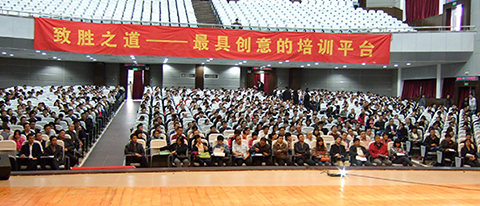

简约行政——公务员应如何勤政为民
张九元老师
来源：原创课程 点击:320次
职业生涯：
38年的职业生涯是这样度过的：6年政府公务员，8年大型国企中层管理者，4年小型国企法人代表，3年高校理论研究者，17年咨询公司顾问。
课程简介：
自《行政许可法》颁布以来，政府改革的呼声越来越高，小政府、大社会的目标也已成为趋势。那么，如何才能达到这样的目标呢?这就需要我们从行政的方法上来一个变革。于是，《简约行政》应运而生。
中国庞大的官僚系统和低落的行政效率，使中国成为世界上行政成本最高的国家。中国新一届国家领导人上任后取消迎来送往的繁文缛节，在显示新人新作风的同时，也带头压缩了行政成本。在过去，中国的行政改革关注的是“行政效率”，即提高政府的办事速度。现在则在“政府工作报告”中提出“降低行政成本”的概念，表明政府对行政行为有了“算帐的观念”。这不仅是经济帐，也是政治帐。
行政机关的服务必须做到优质、高效、简约，努力提高工作效率和质量，自觉执行廉政规定，做到便民、利民、为民才会受到群众的欢迎。我国政府改革的基本模式：大社会与精干高效的法治政府。公开、透明、可问责是其典型特征。
政府改革的难点，在于推进改革的主体恰恰正是改革的对象。为实现我国第三步战略目标，我们必须过好政府改革这一关。从无限政府到有限政府是一个痛苦的过程，更是一场深刻的改革。十七届三中全会为我们提出了更高的要求，我们应该充分地认识到这一点。
做到依法设立、依法行政、集中统一、简约高效、公开透明、便于监督，最大限度地减少审批人的自由裁量权和审批随意性，改进审批方式，提高工作效率，逐步把行政审批纳入规范化、制度化轨道。
这一切，都需要公务员的密切配合，而配合改革，就必须思想通。而思想通，就必须进行对路的培训，《简约行政》就是通向这一目标的必修课程。
本课程曾在北京怀柔区科委、建委、市政部门反复宣讲，受到大家好评。
课程特色：
本课程以系统思想为指导，借鉴西方科学管理的方法，形成了有中国特色的简约行政的公务员培训体系。
本课程配合《行政许可法》的学习和实践，特别是党的十七届三中全会和2009年两会精神，注重中国的实际国情，采取理论与实用相结合的方法，使学员得到即学即用的收获。
这是一门以注重指导各级政府机关、事业单位、群众团体、社会机构管理人员实际操作为原则的针对性很强的课程，把理论融入到了具体的操作实践中，使学习变得轻松愉快又卓有成效。
课程重点：
1、把事物原本简单的理念传达给学员
2、在工作和生活中倡导简约风气
3、在日常工作如何融入简约理念
4、简约行政的重点操作方法
5、简约行政与勤政为民
课程目标：
1、使学员接受简约理念
2、让学员学会思考日常问题的简约原则
3、教学员如何养成把复杂问题简单化的思维习惯
4、教授学员掌握常用的简约管理方法
培训课时：
标准课程2天(12小时)，核心课程一天(6小时)。
课程提纲：
一、简约行政势在必行
1、时代发展的需要
2、组织精简的需要
3、个人提升的需要
4、群众呼声的需要
5、服务效率的需要
6、社会效益的需要
二、正确认识简约行政
1、简约行政的定义
2、简约行政的涵义
3、简约行政的依据
4、简约与简化的关系
三、简约行政的主要特征
1、应用范围广泛
2、易于操作实施
3、兼容互动性强
四、简约行政的主要方法
1、简约的范围
2、需要做哪些改变
3、简约行政的关键点
4、简约行政的基本措施
5、简约行政的系列工具
6、简约行政的标准
五、如何保障简约行政
1、领会十七届三中全会精神
2、学好《行政许可法》
3、撤庙送神与简政放权
4、经常盘点越位与缺位情况
5、八个方面的保障
6、深入贯彻新的两会精神
六、行政为民的具体体现
1、不忘弘扬社会主旋律
2、把社会效益放在首位
3、注重综合的经济效益
4、节约型社会建设需要节俭市政
七、倾听来自中央和基层的声音
1、十七届三中全会两项明确举措
2、两会公布数据彰显简约行政
3、百姓盼望实行简约行政
4、小政府大社会的趋势
八、将简约行政进行到底
1、精兵简政依然有效
2、简约行政的良性循环
3、必须处理好“繁琐危机”
4、简约行政的衡量标准
5、成为简捷高效的政府机构
6、争做健美城市
总结
良好的市政最能体现政府形象
出色的市政为百姓带来福祉
简约行政有利于建设节约型社会
提高办事效率有简捷高效的管理方法
好方法能够提高勤政为民的效率
说明：
1、提纲通过后在提供相应的PPT。
2、案例和互动放在讲课过程中，不再单独列出。
3、留时间回答学员问题。